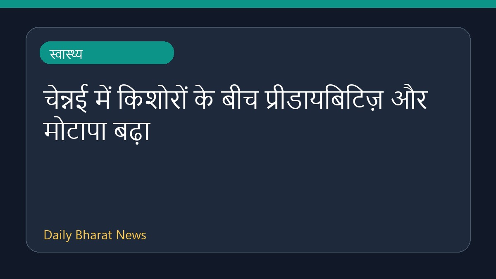

चेन्नई में किशोरों के बीच प्रीडायबिटिज़ और मोटापा बढ़ा

एक अध्ययन के अनुसार, पिछले 17 वर्षों में चेन्नई के किशोरों में प्रीडायबिटिज़ और मोटापे के मामलों में उल्लेखनीय वृद्धि दर्ज की गई है। स्वास्थ्य क्षेत्र से जुड़ी इस रिपोर्ट में युवाओं की बदलती जीवनशैली और स्वास्थ्य पर पड़ने वाले प्रभावों को रेखांकित किया गया है। हालांकि इस विषय पर उपलब्ध विवरण अभी सीमित हैं, लेकिन यह अध्ययन किशोर स्वास्थ्य में आ रही इस चिंताजनक प्रवृत्ति को समझने के लिए महत्वपूर्ण आधार प्रदान करता है।
मूल स्रोत: Health News Sources
Prediabetes, obesity among adolescents in Chennai rose sharply over 17 years, study finds - thehindu.com ↗
Prediabetes, obesity among adolescents in Chennai rose sharply over 17 years, study finds - thehindu.com ↗